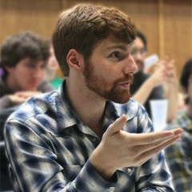
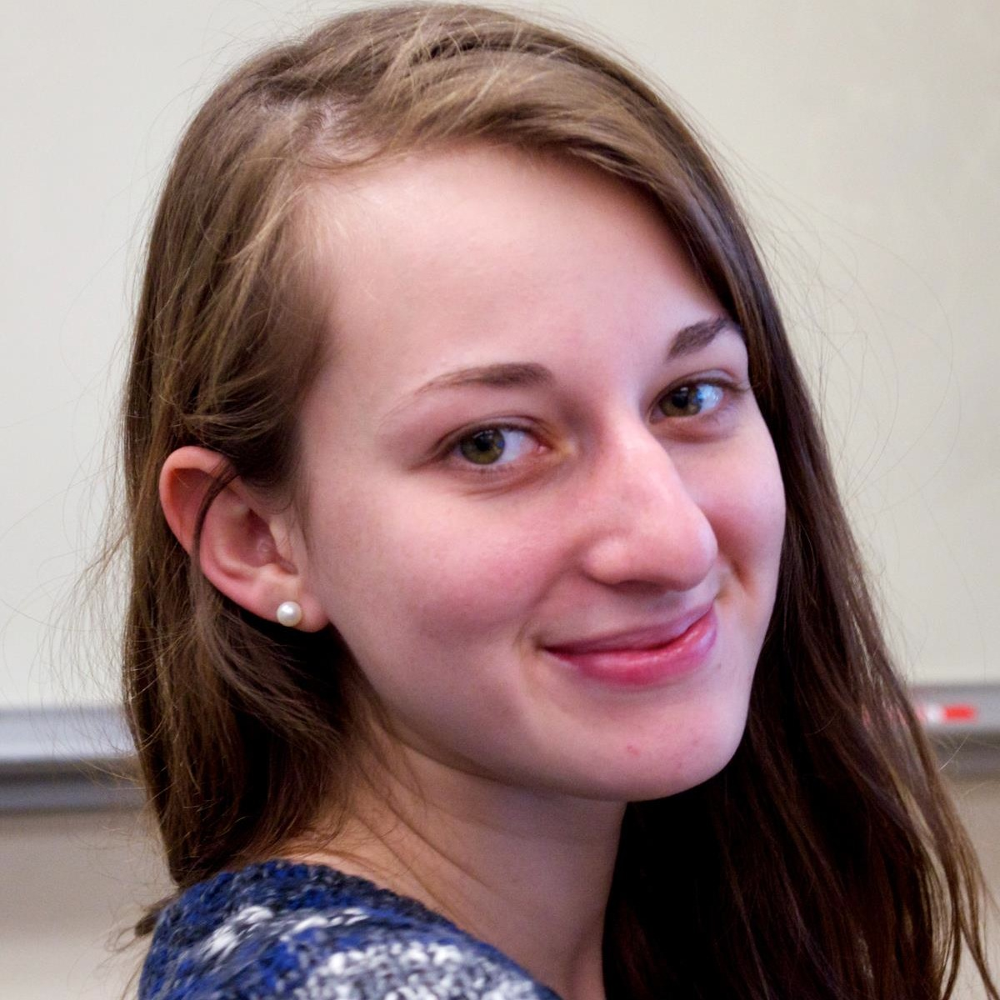
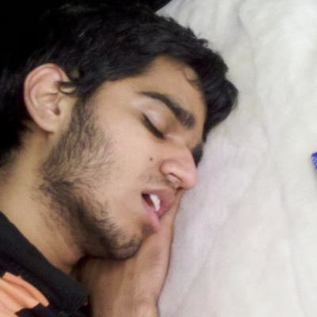

USACS
Undergraduate Student Alliance of Computer Scientists

Devon Peticolas - El Presidenté - peticol.as
Devon is a Senior at Rutgers studying Math and Computer Science. Outside of USACS, he enjoys long walks on the beach, Mr.Pibb, and Minecraft. Over the summer he worked as a HackNY Fellow and interned at Branch. He also made this web site.Karina Ruzinov - Duchess of the Treasury
Karina is a Senior at Rutgers studying Computer Science. She is the acting Treasurer and full-time organized-person of USACS. Her main interests are cats, cats, ice cream, and more cats. Karina is lactose intollerant but this doesn't hinder her love for cats. She's currently working as a Junior Developer for Refinery29.

